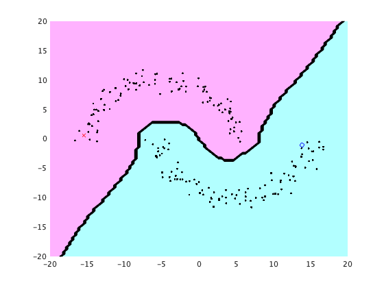

clear all; rand('state',0); randn('state',0);
n=200; a=linspace(0,pi,n/2);
u=-10*[cos(a)+0.5 cos(a)-0.5]'+randn(n,1);
v=10*[sin(a) -sin(a)]'+randn(n,1);
x=[u v];
y=zeros(n,1); y(1)=-1; y(n)=1;
hh=2*1^2;
t=LRLS(x,y,hh);
m=100; X=linspace(-20,20,m)'; X2=X.^2;
U=exp(-(repmat(u.^2,1,m)+repmat(X2',n,1)-2*u*X')/hh);
V=exp(-(repmat(v.^2,1,m)+repmat(X2',n,1)-2*v*X')/hh);
figure(1); clf; hold on; axis([-20 20 -20 20]);
colormap([1 0.7 1; 0.7 1 1]);
contourf(X,X,sign(V'*(U.*repmat(t,1,m))));
plot(x(y==1,1),x(y==1,2),'bo');
plot(x(y==-1,1),x(y==-1,2),'rx');
plot(x(y==0,1),x(y==0,2),'k.');
function t = LRLS(x,y,hh)
n=length(x);
W=[];
for i=1:n
for j=1:n
W(i,j)=exp(-(x(i,:)-x(j,:))*(x(i,:)-x(j,:))'/hh);
end
end
D=diag(sum(W));
L=D-W;
t=(W'*W+eye(length(x))+2*W'*L*W) \ W'*y;
end
